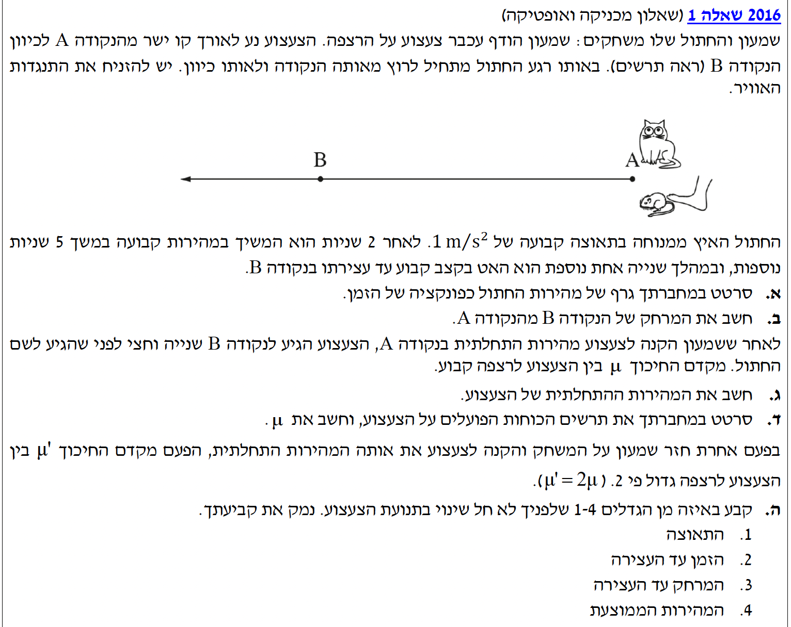

פתרון מודרך, צעד-אחר-צעד

תלמידים יקרים, לפנינו שאלה קלאסית המשלבת קינמטיקה (תיאור התנועה באמצעות גרפים ומשוואות) ודינמיקה (הכוחות הגורמים לתנועה). ננתח את תנועתם של החתול ושל הצעצוע שלב אחר שלב, תוך הקפדה על רישום נתונים מסודר ועבודה עם יחידות תקניות. נצא לדרך!
מתוך תיאור תנועת החתול, נחלק את התנועה לשלושה פרקי זמן. נבדוק את היחידות - הכל כבר ביחידות MKS תקניות (מטרים, שניות).
1. פרק זמן ראשון (\(0 \le t \le 2\)): מהירות התחלתית \(v_0 = 0\), תאוצה קבועה \(a_1 = 1 \text{ m/s}^2\).
2. פרק זמן שני (\(2 < t \le 7\)): תנועה במהירות קבועה במשך 5 שניות.
3. פרק זמן שלישי (\(7 < t \le 8\)): גודל המהירות קטן בקצב קבוע עד לעצירה (\(v_f = 0\)) במשך שנייה אחת.
לסרטט במחברת גרף מדויק של מהירות החתול \(v\) כפונקציה של הזמן \(t\).
מתוך דף הנוסחאות, בפרק קינמטיקה: \(v = v_0 + at\)
נחשב את המהירות בסוף פרק הזמן הראשון (\(t = 2 \text{ s}\)):
במשך 5 השניות הבאות, המהירות נשארת קבועה על \(2 \text{ m/s}\), כלומר עד לזמן \(t = 7 \text{ s}\).
בפרק הזמן השלישי, המהירות יורדת מ-\(2 \text{ m/s}\) לאפס במשך שנייה אחת, כלומר מ-\(t=7\) עד \(t=8\).
נתון כי החתול התחיל את תנועתו בנקודה A ונעצר בדיוק בנקודה B. כמו כן, בנינו בסעיף הקודם את גרף המהירות-זמן של החתול לאורך המסלול כולו.
את המרחק הכולל בין הנקודות A ו-B, כלומר את ההעתק הכולל \(\Delta x\).
במקום לחשב באמצעות הנוסחה הקינמטית \(x = x_0 + \frac{v_0 + v}{2}t\) לכל פרק זמן בנפרד, נשתמש במשמעות הגרפית. השטח הכלוא בין גרף המהירות לבין ציר הזמן שווה להעתק הכולל: \(\Delta x = S_{graph}\).
הצורה שנוצרה בגרף היא טרפז. נחשב את שטחו בעזרת הנוסחה לשטח טרפז או על ידי חלוקה למלבן ושני משולשים. נדגים חלוקה לצורות פשוטות:
נחבר את כלל ההעתקים כדי למצוא את המרחק הכולל:
מרחק התנועה מ-A ל-B הוא \(\Delta x = 13 \text{ m}\).
החתול הגיע לנקודה B בזמן \(t_c = 8 \text{ s}\).
הצעצוע הגיע לנקודה B שנייה וחצי לפני החתול. נבצע חישוב זמן (המרה לזמן התנועה של הצעצוע):
\( t_{toy} = 8 - 1.5 = 6.5 \text{ s} \).
נניח כי הכוונה הייתה שהצעצוע עצר בנקודה B (למרות שאין זה כתוב באופן מפורש, זה משתמע מהניסוח), ולכן מהירותו הסופית \(v_f = 0\).
את המהירות ההתחלתית שהקנה שמעון לצעצוע בנקודה A, נסמן אותה כ-\(v_0\).
מתוך דף הנוסחאות: \(x = x_0 + \frac{v_0 + v}{2}t\)
נציב את הנתונים הידועים לנו במשוואה (\(x - x_0 = \Delta x = 13\)):
נפתור את המשוואה עבור \(v_0\):
מהירות התחלתית \(v_0 = 4 \text{ m/s}\).
מהירות סופית \(v_f = 0 \text{ m/s}\).
זמן תנועה \(t = 6.5 \text{ s}\).
תאוצת הכובד \(g = 10 \text{ m/s}^2\). אנו נבחר ציר יחוס (\(+x\)) ימינה בכיוון התנועה, וציר יחוס (\(+y\)) כלפי מעלה.
1. לסרטט תרשים כוחות חופשי (FBD) הפועלים על הצעצוע.
2. לחשב את מקדם החיכוך הקינטי \(\mu_k\) בין הצעצוע לרצפה.
מקינמטיקה: \(v = v_0 + at\)
מדינמיקה (החוק השני של ניוטון): \(\Sigma \vec{F} = m\vec{a}\)
כוח חיכוך קינטי: \(f_k = \mu_k N\)
כוח הכובד: \(F = mg\) (נסמן ב-\(W\)).
חלק 1: סרטוט תרשים הכוחות. על הצעצוע פועלים שלושה כוחות במהלך תנועתו. אין כוח דחיפה (שמעון רק העניק מהירות התחלתית ועזב): כוח הכובד מטה, כוח נורמלי מעלה, וכוח חיכוך קינטי המנוגד לכיוון התנועה.
חלק 2: מציאת התאוצה ומקדם החיכוך. תחילה, נשתמש בקינמטיקה למציאת תאוצת הצעצוע \(a\):
כעת נרשום את משוואות החוק השני של ניוטון על פי הצירים שבחרנו:
נציב את ביטוי החיכוך \(- \mu_k N = ma\), ולאחר מכן נציב \(N = mg\):
המסה \(m\) מצטמצמת משני צידי המשוואה. נבודד את \(\mu_k\):
נציב את הערכים המספריים (זכרו כי התאוצה שלילית לפי הציר שבחרנו, ולכן המינוסים מתקזזים ונותנים מקדם חיובי):
מקדם חיכוך חדש הגדול פי 2: \(\mu_k' = 2\mu_k\).
המהירות ההתחלתית זהה לזו שבסעיף ג': \(v_0 = 4 \text{ m/s}\).
הצעצוע שוב נעצר לבסוף: \(v_f = 0\).
לקבוע ולנמק עבור איזה מהגדלים הבאים לא יחול שינוי: (1) התאוצה, (2) הזמן עד העצירה, (3) המרחק עד העצירה, או (4) המהירות הממוצעת.
אנו מסתמכים על הפיתוח מסעיף ד': \(a = -\mu_k g\)
זמן העצירה (מתוך המשוואה למהירות): \(t = \frac{v - v_0}{a}\)
מרחק העצירה (מתוך קינמטיקה): \(\Delta x = \frac{v^2 - v_0^2}{2a}\)
מהירות ממוצעת בתאוצה קבועה: \(\bar{v} = \frac{v_0 + v}{2}\)
ננתח כל אפשרות וכיצד היא מושפעת מהכפלת מקדם החיכוך (ולכן הכפלת גודל התאוצה \(|a|\)):